Filtros
Introducción
La función FILTRO en Google Sheets permite filtrar datos de una tabla, devolviendo solo aquellas filas que cumplen con criterios específicos establecidos por el usuario. Esta función mantiene intacta la información original y se actualiza automáticamente a medida que se añaden nuevos datos al rango especificado.
Para la utilización de "filtros" es necesario contar con una hoja ya depurada, es decir que las fechas figuren como fechas, el texto como texto y los números como números.
Vamos a ver diferentes aspectos con una hoja real que utilicé en el pasado.
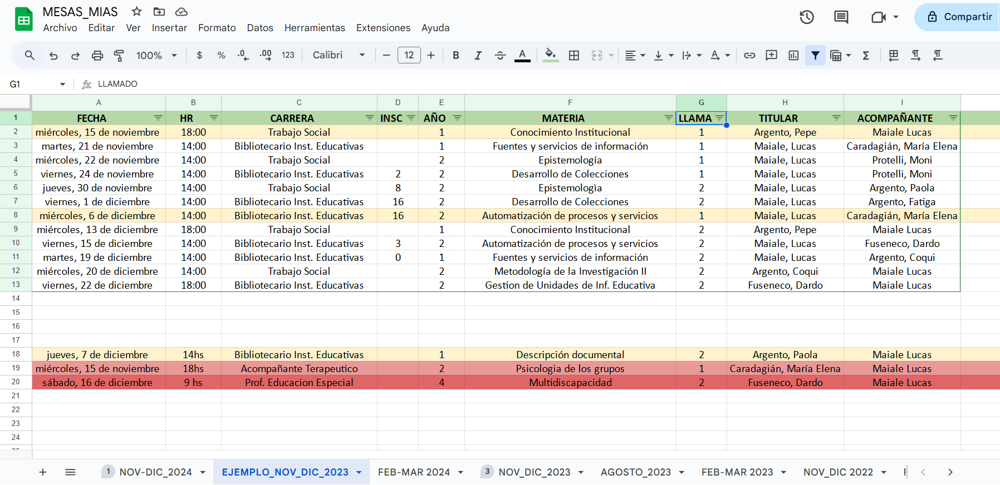
Notemos algunos detalles:
- La hoja en la que estoy posicionado se llama "EJEMPLO_NOV_DIC_2023".
- El nombre del archivo es "MESAS_MIAS".
- Puedo saber que está activado el filtro porque en la barra de herramientas, el ícono con forma de embudo está verde. Además aparece una especie de flecha hacia abajo en cada "Título" del encabezado.
- El filtro está aplicado hasta la fila "13" y la columna "I". Por más que tenga datos más abajo, estos no están dentro del filtro.
- La primer fila oficia como encabezado de la tabla. El tamaño de la tabla está determinado por una línea verde más oscura que envuelve los datos.
- Los datos están ordenados de manera ascendente por "FECHA".
- Hay filas coloreadas, aunque sabemos que esto no influye en el filtro.
Activando filtro
Seleccionamos las columnas que queramos usar y pulsamos en el ícono en forma de embudo.
Para seleccionar, nos posicionamos en la primera columna, cliqueamos y arrastramos hasta la última.
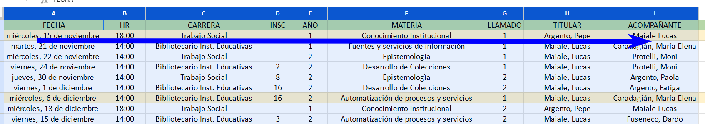
Pulsamos el ícono "filtro".
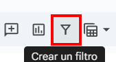
Vemos que el ícono se pone oscuro, los encabezados en negrita y aparecen las flechas de filtro.
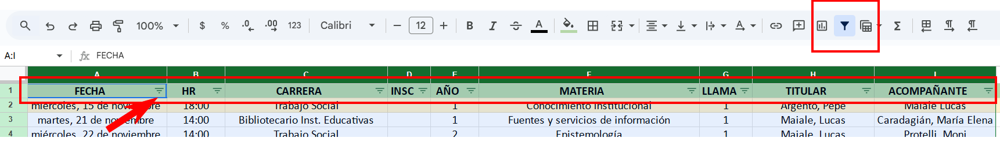
Ordenar
Para ordenar, nos posicionamos en la columna que establecerá el orden y pulsamos en la flecha.
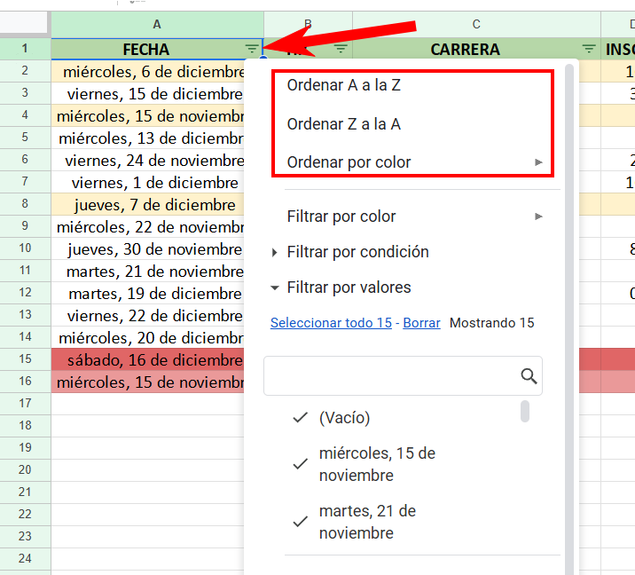
Podemos elegir cualquiera de las tres opciones. En este caso voy a elegir orden ascendente.
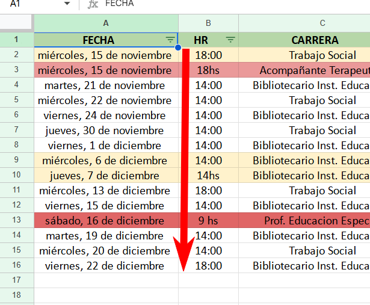
Vemos que las fechas se ordenan y en el resto de las columnas los valores se "mueven" en bloque.
Filtrar por valor
Muchas veces, necesitamos que se muestre solo un valor o un conjunto de valores.
Vamos a buscar "miércoles, 15 de noviembre" porque quiero ver qué mesas tengo en ese día.
Para ello pulsamos en la "flecha" y veo que están seleccionados todos los valores.
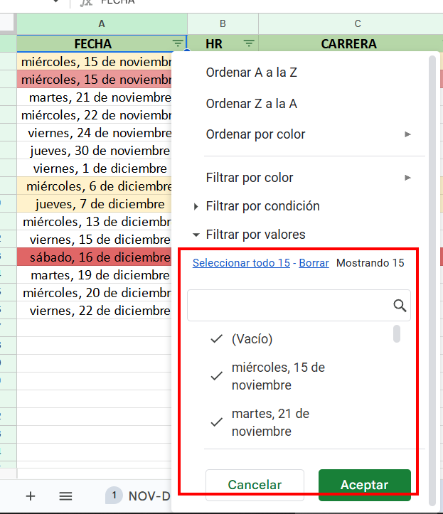
Procedemos a borrar la selección, desaparecen las "palomitas". Luego pulsamos en "miércoles, 15 de noviembre" y "Aceptar".
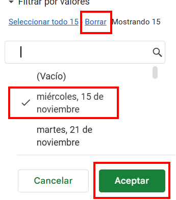
Veamos el resultado.
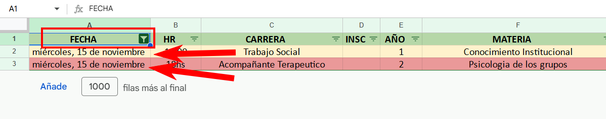
Podemos ver que solo nos muestra aquellos valores en la columna que coinciden con "miércoles, 15 de noviembre".
También observemos que cambió la "flecha" de "filtro". Antes aparecía como tres rayas de distinto tamaño y ahora igual al ícono de filtro.
Filtrar más de un valor
Supongamos ahora que queremos afinar la búsqueda y no nos alcanza solo con filtrar por "FECHA", también queremos filtrar por "CARRERA".
Procedemos del mismo modo que en el paso anterior. Esta vez vamos a elegir "Trabajo Social".
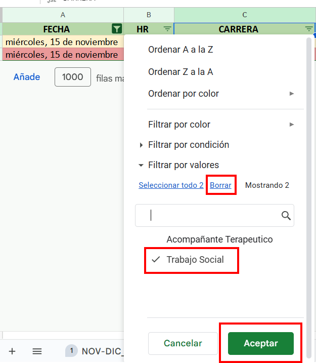
Podemos ver que el resultado esta vez quedó acotado a aquella/as fila/las que contenga/gan los dos valores filtrados.
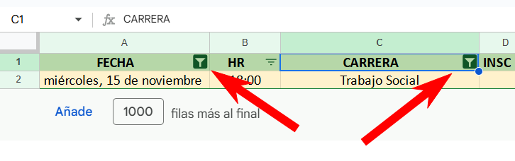